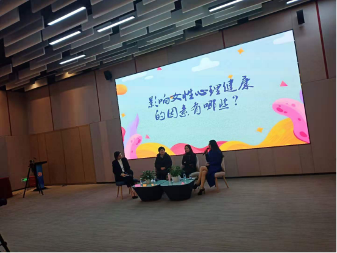

【信息发布时间：2020-12-05阅读次数：】 【我要打印】 【关闭】
12月4日下午，“追梦讲堂”圆桌思享会讲座在文化中心召开，本期讲座主题是关于现代人的心理健康问题，由张家港市三位知名心理咨询师主讲，我中心组织人员参加了本次活动。
会上，主持人首先强调了心理健康的重要性，具体提出如下问题：1、影响女性心理健康的因素有哪些？2、如何正确处理家庭关系之婆媳关系？3、如何正确处理家庭关系之亲子关系？4、如何正确处理家庭关系之夫妻关系？其次，三位主讲对这几个问题进行了深入剖析。最后，主持人讲述了目前追梦路上所面临的挑战，帮助大家认清现实，迎难而上。
通过此次学习，中心参会人员充分意识到心理健康对人际交往的重要性。良好的心理素质不仅会影响个人健康，还影响到了其工作、家庭，甚至对社会产生影响，女性朋友在巨大的社会压力之下更有不容小觑的心理压力，要提高女性心理健康认识，正视压力，更要学会照顾自己，找到适合自己的调试压力的方法。
